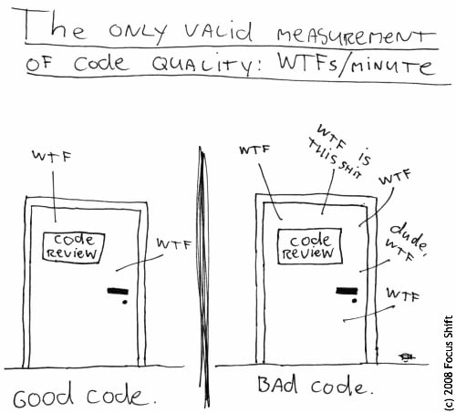

Assurance qualité
Contenus de la section
1-2 Techniques de cueillette de l'information
4-3 Stratégies d'assurance qualité
Temps requis
40 minutes
{kind=link}

L'assurance qualité est l'ensemble des techniques et pratiques misent en place pour vérifier et valider (V&V) la qualité du produit et du processus. C'est un domaine très large qui peut être traité d'un point de vue technique (programmation), personnes utilisatrices (besoins et interfaces) ou de la gestion (équipe de travail, ressources consommées). Cette page donne une vue d'ensemble sur quelques activités courrantes d'assurance qualité.
Validation et vérification
Le processus de V&V est composé de deux opérations. La validation s'assure que le système satisfait aux spécifications et aux exigences des personnes clientes. La vérification s'assure que le système fonctionne correctement.
Activités de l'assurance qualité
L'assurance qualité se divise en plusieurs activités, qui portent souvent sur des critères de qualité différents. Cette section présente les grandes lignes des quatre principales activités d'assurance qualité.
Standard de code
Pratiques à inclure dans la conception du code. Elles peuvent être évalués automatiquement par des [métriques logicielles]{Mesures d'une caractéristique du code source.} ou manuellement.
Parmis les métriques intéressantes à consulter, le nombre de lignes de code (LOC : lines of code) et la complexité des classes (WMC : weighted method complexity) de la suite de Chidamber et Kemerer peuvent être intéressante à consulter.
On retrouve plusieurs métriques qui permettent d'évaluer le niveau d'abstration et de facilité de mise à jour du code. Elles sont ne pas parfaites, mais donnent un indicateur approximatif des caractéristiques du système à cet égard.
Revues de code
Les revues de code consistent à faire relire le code par un autre membre de l'équipe. Bien que longue, il s'agit d'une des meilleures activités pour assurer la qualité du code, le respect des standards et l'uniformité dans le code.
On effectue des revues de code à certains moments clés du processus, généralement à l'intégration d'une fonctionnalité dans une base de code commune. Les revues ouvrent la porte à plusieurs améliorations du code et augmente le degré de compréhension du projet et des besoins pour les membres impliqués.
Planification et exécution des tests
Un plan de tests est d'abord réalisés pour déterminer les moments et situations d'utilisation judicieux du mécanisme de test. L'exécution des tests, l'interprétation des sorties et le débogage fait aussi partie des activités de test.
Faire un plan de test
Le formats de plan de test varient selon les besoins et la nature du système développé. Voici un exemple de structure de plan de test en trois parties :
Partie 1 - Définition du processus
- Définir les tests d'acceptation (validation et vérification);
- Séparer les critères du test d'acceptation en catégories (unitaire, intégration, charge);
- Définir les entrées des tests et résultats attendus:
- Tests unitaires;
- Tests d'intégration;
- Tests de charge.
Aller plus loin que les tests d'acceptation
Les tests d'acceptation sont le critère minimal à atteindre pour déployer un système. Souvent, les tests plus précis (comme les tests unitaires), peuvent être ajoutés, et ce, même s'ils ne correspondent pas à un critère du test d'acceptation.
Partie 2 - Processus de test régulier
- Choisir et intégrer aux processus un outil de gestion des tests unitaires et d'intégration;
- Exécuter tests unitaires et intégrations à étape importante, comme l'ajout d'une fonctionnalité à la base de code;
- Exécuter, au besoin, les tests de régression pertinents.
Partie 3 - Processus au déploiement
- Exécuter les tests charges / monkey testing
- Exécuter les tests d'acceptation
Les trois étapes, et leur pertinence, devraient être sommairement présentées dans le document d'analyse à la section portant sur la qualité logicielle.
Rencontre d'équipe
Au sein des rencontres d'équipe, il est suggéré de prendre, périodiquement, un temps de réflexion sur les pratiques utilisés par l'équipe, le niveau de motivation et se questionner sur les raisons de nos processus (à quels besoins répondent-ils ?).
À la lumière de ces rencontres, les processus d'équipe peuvent être revus pour tenir compte des besoins actuels de l'équipe en termes d'information ou d'organisation.
Prototypage : comment essayer quelque chose
Certaines fois, on veut essayer quelque chose de nouveau dans un projet, se familiariser avec un outil, tester une solution et l'on veut faire ça sans tenir compte des contraintes liés à une production de qualité. On peut utiliser un prototype jetable pour ce faire. Un prototype jetable est un bout de code qui :
- Est temporaire;
- Permet de tester une fonctionnalité ou une solution;
- Est isolé du reste du code (faire une branche).
Une fois le prototype testé, alors on peut utiliser les apprentissages faits pour coder la fonctionnalité correctement dans le système.
Inclure le prototype dans le système
Souvent les prototypes sont "volontairement" mal conçus et vont significativement dégradé la qualité du système s'ils sont introduits (même en étant partielle réécrit). Malgré l'intérêt de sauver du temps à court terme en utilisant le prototype, l'intégrer présente un risque à long terme dans le projet.
Processus de tests
Tests et débogage
Les tests sont l'exécution du système pour identifier des zones qui contiennent une erreur. On peut faire divers types de tests pour rechercher des problèmes pour divers critères de qualité logicielle. Le débogage est l'exécution du système pour identifier la nature des erreurs et la façon de les régler. Pour effectuer un débogage efficace, il faut d'abord localiser les erreurs et être en mesure de les reproduire. Il s'agit de deux activités complémentaires.
Dans la vidéo ci-dessus, le test constitue l'action de la docteure et le débogage serait de recherche les connexions nerveuses (pour le moins inusitées) qui font bouger les oursons.
Les tests logiciels
Ils constituent une grande partie du processus d'assurance qualité. Il s'agit d'une activité de la catégorie « Validation et vérification (V&V) ».
On utilise les tests comme la principale activité de la vérification. Les tests exécutent le système selon divers scénarios et dans diverses conditions. Un test échoué révèle une faute dans le fonctionnement du système, mais donne rarement des indications quant à la façon de la régler.
Qu'est-ce que les tests ne permettent pas d'assurer ?
Que le système fonctionne correctement ! Un test réussi permet seulement de vérifier que dans les conditions du test le système se comporte correctement (et encore là, des facteurs externes au test pourraient interférer). Un test échoué prouve toutefois la présence d'une erreur ou d'une situation non prévue dans la base de code.
On trouve plusieurs types de tests que l'on peut exécuter sur un système. Selon la complexité du système, le niveau des attentes et le budget, on choisira les plus pertinents.
- Tests d'interface utilisateur;
- Tests unitaires;
- Tests d'intégration;
- Tests de régression;
- Tests de charge;
- "Monkey testing";
- Tests d'acceptation;
- Vérification;
- Validation.
Tests d'interface utilisateur
Critères évalués : utilisabilité, efficience, facilité d'apprentissage
Le but de ces tests est de vérifier l'utilisabilité du système et de son interface. On mesure avec ces tests la clarté des interfaces, des contrôles et la navigation.
Les outils de tests utilisés sont :
- Inspection par des personnes expertes (voir grille heuristique);
- Observation de l'interaction de groupes de personnes utilisatrices avec le système;
- Questionnaires et entrevues de personnes utilisatrices réelles ou recrutées comme groupe témoin.
Tests unitaires
Critères évalués : disponibilité, résilience, utilisabilité
Ces tests servent à tester une unité du programme en l'isolant de l'interaction avec les autres composantes. On se limite à tester les méthodes publiques, car elles sont les seules à être exposées. Les méthodes protégées ou privées seront nécessairement appelées par une méthode publique. Chaque cas de test devrait porter sur une seule méthode. On peut avoir plusieurs cas de tests pour une même méthode.
Les tests unitaires sont des bouts de codes qui configurent le système dans le scénario du test puis appellent la méthode à tester et évaluent le résultat du traitement. On peut ajouter des « drivers » et des « stub » pour aider à isoler le contenu à tester. Il faut être prudent cependant, il arrive (souvent) que l'erreur provienne du test lui-même plutôt que du code testé.
Écrivez des tests unitaires
Déterminez 3 cas de tests pertinents pour la fonction suivante. Indiquez les entrées et la sortie attendue.
Solution
| Scénario | Entrée "a" | Entrée "b" | Sortie attendue | Sortie réelle | Conclusion |
|---|---|---|---|---|---|
| 1 | 5 | 10 | 15 | 15 | Valide |
| 2 | -18 | -12 | -30 | -30 | Valide |
| 3 | 2033258858 | 114254789 | 2147513647 | -2147453649 | Fautif |
Que faire avec le scénario 3 ?
- Lancer une exception de débordement (overflow);
- Indiquer dans la documentation que la fonction n'est pas sécuritaire pour les débordements;
- Changer la structure d'entier pour utiliser de larges nombres;
- Tout cela est guidé par l'analyse de cas d'exécution plausibles.
Tests d'intégration
Critères évalués : disponibilité, résilience, utilisabilité
Les tests d'intégration vérifient le fonctionnement correct de la combinaison de plusieurs fonctionnalités. Ils portent généralement sur des fonctionnalités de haut niveau. Ils prennent souvent la même forme que les tests unitaires, c'est seulement la portée de l'appel de la méthode (et l'absence de « stub ») qui les différencie.
Tests de régression
Critères évalués : adaptabilité, disponibilité, résilience, utilisabilité
Une séquence de tests de régression vérifie que les nouvelles fonctionnalités n'introduisent pas de bogues dans les fonctionnalités existantes. Il s'agit en fait d’exécuter de nouveau des tests unitaires et d'intégration sur des parties de la base de code qui peuvent dépendre des changements faits. À l'occasion, il peut être intéressant d'exécuter tous les tests pour se prémunir des [effets de bord]{comportement imprévu d'une fonctionnalité en raison de la modification ou l'accès à des ressources partagées.}.
Les tests de régression ont toutefois le problème de devenir lourds très rapidement, car exécuter tous les tests ça finit par faire beaucoup de tests. Éventuellement, il faut se restreindre à sélectionner ou prioriser certains tests en utilisant divers critères de pertinence.
Tests de charge (stress test)
Critères évalués : sécurité, disponibilité, résilience
Ces tests vérifient que le système supporte la charge de travail qui lui est demandée; que ce soit le nombre de connexions simultanées, la concurrence des opérations, la gestion de la mémoire, la bande passante, la puissance de calcul... Il s'agit de séance dans lequel on simule une charge réelle (ou même plus lourde), afin de s'assurer que le système et ses composantes sont capables de gérer la demande. L'utilisation peut aussi être prolongée afin de détecter et réduire les fuites de mémoire. Les causes des erreurs sont toutefois difficiles à identifier et demandent une stratégie de journalisation (log) déjà mise en place.
Cependant, les tests de charge sont souvent imparfaits, car les personnes utilisatrices n'effectuent pas toutes les mêmes opérations et celles-ci tendent à être cohérentes. Peut-être que l'intelligence artificielle viendra améliorer ces tests...
Tests aléatoires (monkey testing)
Critères évalués : sécurité, disponibilité, résilience
Ce type de test consiste à fournir au système des entrées aléatoires, voire carrément erratiques, afin de tester la robustesse du système à des attaques variées ou des actions inattendues (comme entrer XÆA-Ⅻ dans le champ nom...). On teste généralement les contrôles et les fichiers de données lus par le système. On utilise des mécanismes semblables à ceux des tests unitaires pour exécuter les tests.
L'usage de ces tests est toutefois critiqué, car il s'agit de chercher une aiguille dans une botte de foin (tester n'importe quoi en espérant qu'une erreur soit détectée).
Tests d'acceptation
Le but des tests d'acceptation est de s'assurer qu'un système est prêt à être déployé. Ils se séparent en deux catégories : la validation et la vérification. Tous les critères de qualité d'un système sont susceptibles d'être évalués. Une fois les tests d'acceptation complétés, le système est considéré comme candidat au déploiement (release-candidate).
Validation
La validation s'assure que le système satisfait aux spécifications établies par le client et qu'il est prêt à être déployé. Ce type de test prend généralement la forme d'une série de questions à valider avec la personne cliente avant le déploiement. Ces questions, souvent ouvertes, portent sur la totalité du système et s'assure que l'état dans lequel la livraison se fait correspond aux attentes, y compris (et surtout), en cas de livraison partielle.
Vérification
La validation s'assure que le système répond aux critères d'utilisabilité minimum établie par le client et qu'il est prêt à être déployé. Ce type de tests prend généralement la forme d'une série de tests unitaires et d'intégration qui doivent fonctionner avant de pouvoir déployer. Le choix des tests sera guidé par la criticité du système, la tolérance aux erreurs et l'utilité des fonctionnalités. Ce type de test n'exige pas que tout soit parfait, juste suffisamment correct pour être utilisable.
Il peut aussi être intéressant d'introduire une phase « alpha » ou « beta » dans la passation des tests de vérifications afin d'obtenir des données réelles d'utilisation avec de déployer le système.
- Quoi tester ?
- Tester l'ensemble des fonctionnalités du système en cas réel. (Évidemment, l'ensemble des scénarios plausibles ne peuvent pas être testés.)
- Comment le test est-il effectué ?
- Utilisation du système par des utilisateurs cobayes
Une fois les tests d'acceptation complétés, le système est considéré "release-candidate"
Et les autres critères de qualité
Les autres critères peuvent être mobilisés dans d'autres étapes du processus d'assurance qualité (sujet de la prochaine section).
Que faut-il tester ?
Généralement, on oriente l'effort de test vers les éléments de code qui sentent mauvais :
- Complexes (qui ont un fort niveau d'imbrication ou les méthodes avec beaucoup de paramètres);
- Fortement dépendants (surtout ceux qui sont utilisés par tout le monde);
- Longs (il y a toujours des erreurs dans une méthode de 75 lignes);
- Souvent utilisés (un bogue dans ces éléments va poser problème rapidement et possiblement dans beaucoup de parties du système).
Résumé des types de tests et de leur utilité